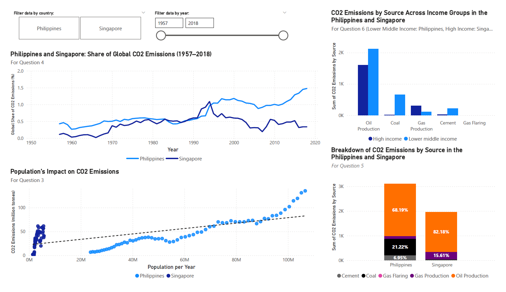

A Data Visualization Study Using Power BI
Analyzing Carbon Emissions of the Philippines and Singapore
Project Overview
This project involved conducting an exploratory and descriptive analysis of carbon dioxide (CO₂) emissions in the Philippines and Singapore, two countries with contrasting economic and developmental profiles. Using a global dataset compiled from sources such as Our World in Data, the Carbon Dioxide Information Analysis Center (CDIAC), and the Global Carbon Project, the analysis examined emission trends, sources of emissions, and global standing over time.
The study was structured around seven key questions that explored topics such as peak emission years, population-emission relationships, emission sources by country and income group, and overall comparative environmental profiles. Data filtering, visualization, and basic interpretation were performed using Power BI, with additional emphasis on comparative analysis and critical insight generation.
Skills Strengthened
- Data Wrangling: Filtering and preparing datasets for focused analysis.
- Data Visualization: Designing effective and insightful charts, graphs, and comparative visuals using Power BI.
- Exploratory Data Analysis (EDA): Identifying patterns, relationships, and outliers in data through descriptive techniques.
- Data Storytelling: Synthesizing findings into coherent narratives that connect visualizations to real-world implications.
- Critical Thinking: Analyzing socio-economic and environmental factors influencing CO₂ emission patterns.
- Comparative Analysis: Evaluating differences between a lower-middle-income country (Philippines) and a high-income country (Singapore) based on multiple dimensions.
This project not only demonstrated proficiency in Power BI and data analysis techniques but also reflected a deeper appreciation of the intersections between data science, sustainability, and global development.
View Full Project Document Download Power BI File (.pbix)